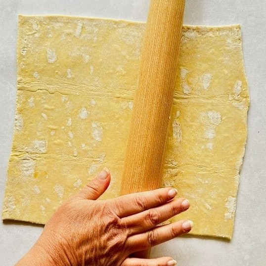
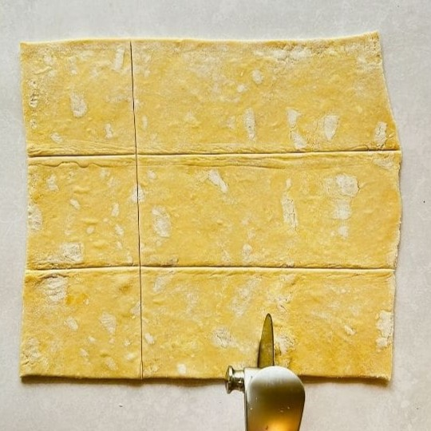
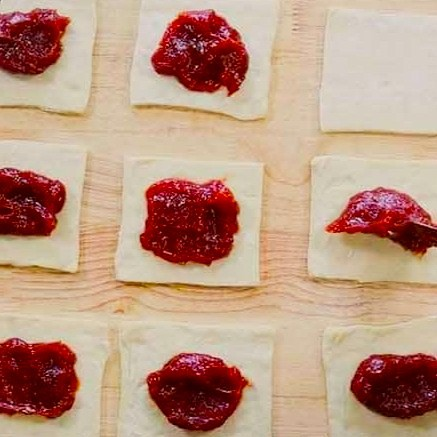
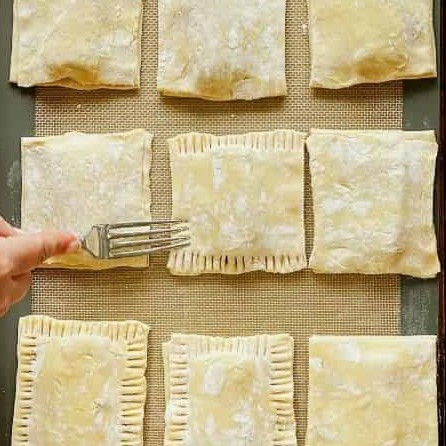
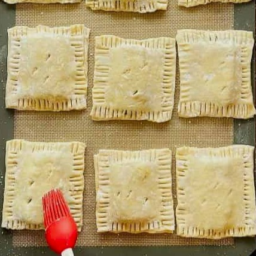
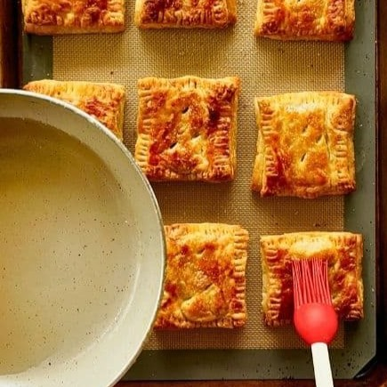

Ingredients
Equipment
Instructions
- Preheat oven to 375°F and line a baking sheet.
- Roll out the puff pastry dough into a sheet. Repeat with a second piece of dough. Do this step respectively for about every 9 pastries.
- Cut each dough sheet into roughly nine even rectangles.
- Place 9 of the sliced pastry pieces and set aside another set of 9. Add about 1/9 cup guava jam to each piece.
- Seal pastries by brushing edges with water and top each with one of the pastry pieces set aside.
- Press slightly along the edges of the dough or optionally press lightly with a fork.
- Wisk an egg and brush pastries with egg wash.
- Set pastries to chill for 10–15 minutes.
- Cut a slit on top for steam to escape and bake for 30–35 minutes.
- Combine boiling water and sugar to make glaze, then let cool.
- Brush glaze onto warm pastelitos and optionally sprinkle additional sugar on still-wet pastries.

Rolling out pastry

Cutting pastelitos into even pieces

Adding guava jam or paste to center

Covering pastelitos and closing edges

Brushing pastelitos with egg wash and baking

Brushing baked pastelitos with sugar glaze
 The History of Pastelitos
The History of Pastelitos